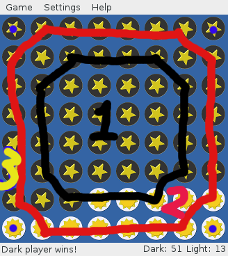

黑白棋分析法
根据上文《黑白棋》提到的观点，我把这个引申出来成为一个可以操作判断的分析方法，暂且命名为“黑白棋分析法”。现在我将其中的重点简单叙述一下，与大家分享。

我先简单的说明一下：
- 标识1中所覆盖的区域也就是中间最大的一部分面积，这可以代表我们生活中绝大多数行为。
- 标识2所划过的边域是指我们多年来养成的习惯，无论是好的，还是坏的，都在进而影响我们生活中的绝大多数行为。
- 标识3中的四个点是指我们的人生观、世界观、价值观。这个直接决定我们平时会主动的养成，或者放任养成什么样的习惯，而这些习惯最后影响的是我们的人生，和我们生活中身边的接触到的人群，进而形成一股风气，影响整个社会。其结果就是最后形成的是一个健康向上的社会风气，还是奢迷流俗的社会风气。这个工作本来应该是由学校、老师来抓的，目前看来，效果并不理想。
有心的网友可能会问，那么这个和对邪教信徒的转化有什么关系呢？事实上是确实是很深的关系因果存在。大家可以试想一下，一个很简单的道理，如果一个浸泡在酱油缸里的食物，日子久了，是不是就有了酱油的味道呢？同样一个长期自我浸泡在邪教的教理下的个人，是不是也会有很多邪教的特质呢？那么邪教的特质是什么呢？ 这里给大家留一个小题目：请根据本人提供的网友分享中的5个案例任选其一，尝试运用黑白棋分析法加以分析，哪些属于邪教的特质，从哪些特征可以看出是否是加入了邪教。其中反映具体日常行为变化的有哪些？反映日常习惯变化的有哪些？反映人生观、价值观、世界观变化的有哪些？分别导致了哪些具体后果？如何在有征兆预警的时候，采取合适的应对措施？请大家独立思考给出完整的分析过程，并在本文后跟帖。
天下兴亡，匹夫有责，那么这个责究竟该是什么呢？其实就是我们的一言一行，所思所想。
亲爱的朋友，如果你看到此文，不管你的家人朋友有没有信邪教，你都可以问问自己，你的人生观、世界观、价值观是什么？这个很重要，值得认真思考。不管你有多忙别忘了时时提醒一下自己，不要忘记了自己的心，问问它，自己究竟在忙些什么？想些什么？要些什么？
最后心理健康总有个标准吧，没错，您往这里看NOTES:心理健康的现实标准
© 2011~2014 心灵家园（退教心理咨询）